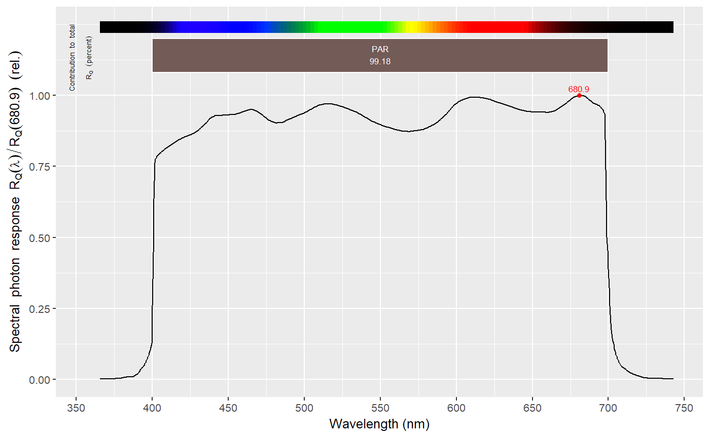

Spectral response data for broadband ultraviolet and visible radiation sensors. Different data sources were used: author-supplied data from scientific research papers, sensor-manufacturer supplied data, and published sensor specifications. Part of the 'r4photobiology' suite Aphalo P. J. (2015) <doi:10.19232/uv4pb.2015.1.14>.
Data for response spectra for different types of broadband sensors. The package contains one collection of spectra for different broadband sensors.
In addition to the spectra the package provides character vectors of names to be used as indexes to subset groups of spectra. In many cases spectral data are normalized to spectral energy responsieness equal to one at the wavelength of maximum spectral energy response (peak sensitivity).
The data in this package are not original. Some have been provided by authors of scientific publications and manufacturers. However, most of the spectra have been digitised from manufacturer's brochures and manuals available on web sites.
The spectral data included in this package are not all based on supplier's specifications and are only for information. The exact response spectrum depends to some extent on testing conditions, but more importantly varies among individual sensor units. Spectral specifications are usually given as typical values. All the sensors for which data are presented here need periodic calibration. In other words, the data provided here are not a substitute for actual calibration under measuring conditions for each individual sensor unit. For less demanding situations like roughly assessing the suitability of sensors or the need or not of a transfer calibration, the data are good enough. They can be especially useful in teaching.
Useful links:
Report bugs at https://bitbucket.org/aphalo/photobiologysensors/issues
library(photobiology) library(photobiologyWavebands)#>#>library(ggspectra)#>#>names(sensors.mspct)#> [1] "Berger_UV_Biometer" "BF5" "flat_e" #> [4] "flat_q" "CUV_5" "PQS1" #> [7] "UVS_A" "UVS_B" "UVS_E" #> [10] "LI_190" "LI_200" "LI_210" #> [13] "TOCON_blue4" "SG01D_A" "SG01D_B" #> [16] "SG01D_C" "SG01L" "SKE510" #> [19] "SKL310" "SKP210" "SKP215" #> [22] "SKR110_FR" "SKR110_R" "SKS1110" #> [25] "SKU421" "SKU421a" "SKU430a" #> [28] "SKU440a" "SL_501_high_UVA" "SL_501_low_UVA" #> [31] "SL_501_typical" "SM60" "E1c" #> [34] "BW_20"licor_sensors#> [1] "LI_190" "LI_200" "LI_210"par_sensors#> [1] "SKP215" "SKE510" "SKP210" "PQS1" "LI_190" "BF5"intersect(par_sensors, licor_sensors)#> [1] "LI_190"#> Total PAR #> 99.18297 #> attr(,"time.unit") #> [1] "second" #> attr(,"radiation.unit") #> [1] "photon response contribution.pc"